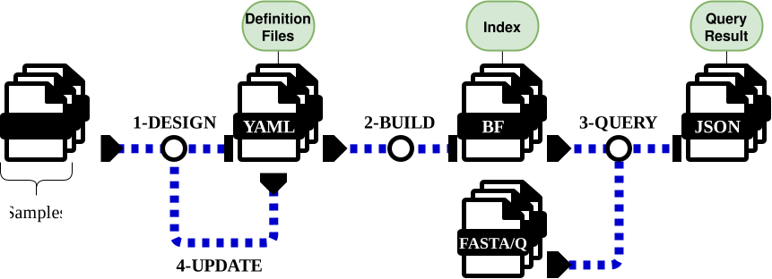

kmhelpers
A Python toolkit for managing, compressing, and querying kmindex indices efficiently.
What is kmhelpers?
kmhelpers is a command-line toolkit built on top of kmindex that automates the full k-mer index lifecycle: discovering and profiling samples, composing and building indices, and querying them against FASTA/FASTQ sequences — with compression and registry management (under development) on the way.
This typical lifecycle breaks down into four steps, shown below:
- DESIGN — discover samples and generate index definitions.
- BUILD — build k-mer indices from those definitions.
- QUERY — search the indices with FASTA/FASTQ sequences.
- UPDATE — add new samples to an existing index without rebuilding from scratch.

Listed 10 samples -> coli_db/list/coli_samples_20260706_173255.jsonl
SUCCESS ('list')
SUCCESS ('profile')
Composed 10 samples into 2 indices
coli_g0: 5 samples → 14.7MB
coli_g1: 5 samples → 34.6MB
SUCCESS ('compose')
Done in 25.97s
SUCCESS ('plan')
Building index 'coli_g161_initial_p0'...
Building index 'coli_g170_initial_p0'...
Merging ['coli_g161_initial_p0'] into 'coli_g0'
Merging ['coli_g170_initial_p0'] into 'coli_g1'
SUCCESS ('apply')
Done in 18.22s
[1/1] Querying: query...
Time: 0.10s
Results: results/query/result
Completed in 0.10s
Output directory: results/
Done in 0.11s
4.1 - Design
Listed 5 samples -> coli_db/list/coli_samples_20260706_180519.jsonl
SUCCESS ('list')
Found existing layout file, skipping 'profile'
Composed 5 samples into 2 indices
coli_g0: 4 samples → 14.7MB
coli_g1: 1 samples → 34.6MB
SUCCESS ('compose')
Done in 12.04s
4.2 - Build
SUCCESS ('plan')
Building index 'coli_g161_update_p0'...
Building index 'coli_g170_update_p0'...
Found backup version of 'coli_g0': ['coli_g0_20260707_200039']
Merging ['coli_g161_update_p0', 'coli_g0_20260707_200039'] into 'coli_g0'
Found backup version of 'coli_g1': ['coli_g1_20260707_200039']
Merging ['coli_g170_update_p0', 'coli_g1_20260707_200039'] into 'coli_g1'
SUCCESS ('apply')
Done in 7.61s
Performance
Most kmhelpers commands (design, plan, query, compose, ...) complete in a few seconds, since they mainly manipulate metadata and small files. The exception is build (and the underlying apply build/merge steps): actual k-mer counting and Bloom-filter construction are CPU- and I/O-bound, so runtime scales with sample count and data size — expect build/merge steps to take anywhere from seconds to hours depending on dataset size, --threads, and storage speed.
Quick links
Version & Requirements
kmhelpers v0.6.3 · Python ≥ 3.8
| Tool | Version |
|---|---|
| kmindex | ≥ 0.6.1 |
| kmtricks | ≥ 1.6.0 |
| ntCard | ≥ 1.2.2 |
See Installation for build instructions.
License
GPL-3.0-only — Copyright © 2026 Sébastien Bellenous, Genscale, INRIA